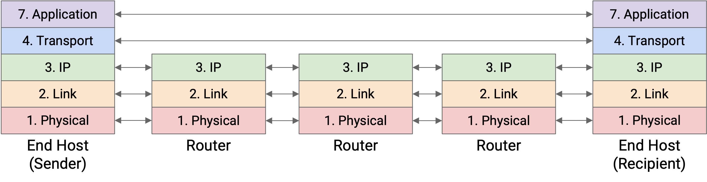
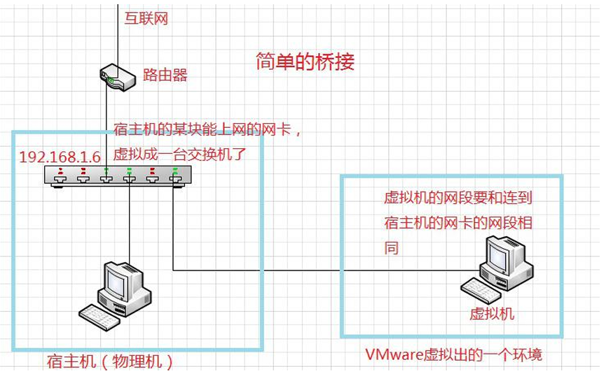
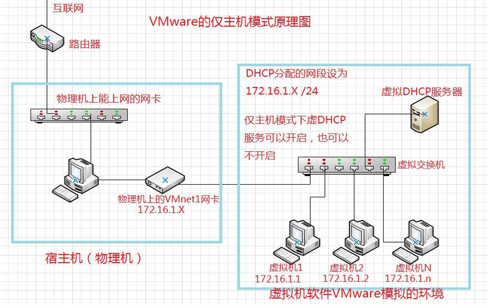

Demo
讲义：基于Openwrt的软路由实验设计
写在前面：这部分实验的意义
作为一门公共选修课 旨在让小白学会软路由配置的同时理解原理 相关网络知识 从而独立解决问题 避免做GPT的奴隶:) 如果诸位对该教材有建议或异议 欢迎联系我们进行修改 我们开始编写此Note时还在上大一 知识浅薄 难以准备万全 同时，本文大体上仍停留在科普层面，我们在编写的时候并没有硬套生僻定义概念，以便零基础同学理解。抬杠、抠字眼和喜欢对概念出警的朋友请绕道。
一、计算机网络基础知识
1.分层与协议
设想你要访问互联网，比如在网络上搜索一只可爱的鼠鼠，你的电脑是怎么获得数据的呢？

互联网与邮政系统有许多相同的设计选择。为便于理解，我们以邮政系统为例： 假设 A 公司的老板想给 B 公司的老板写一封信。这封信是如何发送的呢？ A公司老板把信折好交给秘书，秘书再把信装进信封，信封上写着B公司老板的全名。 秘书将这封信送到收发室。邮政工作人员将信件放入写有B公司街道地址的盒子中，然后将包裹放入送货卡车。 此时，信件本身已被多层识别信息包裹（信封、盒子）。快递公司将信件寄往B公司（可能经过多辆卡车、多架飞机、多位邮递员等）。 当信件到达 B 公司时，邮件收发室会取出盒子并将信封交给秘书。 然后，秘书看到信封上老板的名字，便取出信封，将信递给B公司的老板。
我们需要提出以下问题： Q1.为什么需要收货地址？ Q2.我们需要多少收货地址？ Q3.收货地址到底是什么？
A1.这问题有点傻不是吗。假设某个应用程序想要通过互联网发送一个文件。我们可以提取图像中的一些比特，将它们放入一个数据包中，然后通过互联网发送。当交换机接收到这个由 1 和 0 组成的序列时，它不知道如何处理这些比特。就像信封一样，当我们发送数据包时，我们需要附加一些额外的元数据，告诉网络基础设施如何处理该数据包。这些额外的元数据被称为报头。其余部分（例如，发送的文件、信封内的信件）被称为有效载荷。打个比方，邮局不应该阅读我信件的内容。它应该只阅读信封上的内容来决定如何寄送我的信件。同样，网络基础设施也应该只阅读信头来决定如何传递数据。
收件人关心的是信件的内容，而不是信封本身。同样，终端主机上的应用程序关心的是有效载荷，而不是报头。即便如此，终端主机仍然需要了解报头，以便在发送数据包之前添加报头。
A2.让我们简单回顾一下邮政的类比。假设 A 公司的老板想给 B 公司的老板写一封信。这封信是如何发送的呢？ A公司老板把信折好交给秘书，秘书再把信装进信封，信封上写着B公司老板的全名。 秘书将这封信送到收发室。邮政工作人员将信件放入写有B公司街道地址的盒子中，然后将包裹放入送货卡车。 此时，信件本身已被多层识别信息包裹（信封、盒子）。快递公司将信件寄往B公司（可能经过多辆卡车、多架飞机、多位邮递员等）。 当信件到达 B 公司时，邮件收发室会取出盒子并将信封交给秘书。 然后，秘书看到信封上老板的名字，便取出信封，将信递给B公司的老板。 请注意，当我们移至较低的抽象层时，我们会在数据周围包裹更多的标头。然后，当我们移至较高的抽象层时，我们会从数据中剥离出更多层。每一层只需理解自身的报头，并（在某种意义上）与同一层的对等体进行“通信”。当秘书A在信封上写下名字时，这意味着秘书B需要阅读（而不是邮递员或老板）。
更正式地说，在互联网上，同一层的对等体通过在该层建立协议进行通信。该协议仅对该特定层的实体有意义。
因此，我们需要相应跨层所需数量的“地址”。
A3.网络地址是一个告诉我们主机在网络中位置的值。 有时主机会使用其人类可读的名称（例如 ~~www.google.com~~ www.baidu.com）来表示。有时，同一主机会使用机器可读的 IP 地址（例如 114.514.191.810尽管这并不存在）来表示，其中 IP 地址以某种方式编码了服务器的位置信息（如果服务器移动，IP 地址可能会发生变化）。有时，同一主机可能会使用其硬件 MAC 地址来表示，而 MAC 地址永远不会改变。
总的来说 你可能听说过互联网七层协议 这就是那个东西
初次接触的话，你可能会好奇这样设计的原因，接下来的内容可能会解答你的部分疑惑，如果不能解决你的全部疑惑，我们推荐你阅读UC Berkley开设的CS168计算机网络基础课程教材。
2.路由
我想我们不用再重述邮件收发室、秘书和老板了，但是我们一直忽略了邮政公司是如何工作的。我们究竟是怎样架设起连接全球的互联网的？
假设机器 A 和机器 B 都连接到互联网。机器 A 想要向机器 B 发送一条消息，但这两台机器之间并没有直接连接。机器 A 如何知道将消息发送到哪里，以便消息最终到达机器 B？消息将通过哪条网络路径到达目的地机器 B？在本块内容中，我们将学习路由来回答这些问题。
路由所解决的问题：当路由器接收到一个数据包时，路由器如何知道将数据包转发到哪里，以便最终到达最终目的地？ 路由本质上是一个图论问题，在不考虑自治系统特殊策略的情况下，路由拓扑应构成一个满足最小成本路由原则的有向无环图（DAG）。我们并不需要了解那么深，只需要感性认识路由的概念就好。
还记得第一块我们讲的邮政系统吗，假如一个包裹要送到中国辽宁省大连市大连理工大学西山学生生活区7舍320，商家把这个快递投到最近的邮局之后，快递员要根据这个邮局保存的邮政线路图投到尽量靠近终点的下一个邮局。举个例子，如果下一个邮局可以选择大连市邮局或者大连理工大学西山学生生活区7舍丰巢柜，那默认一定会选择后者。用术语来讲，数据包到达一个路由器（邮局）后会根据该路由器所维护的路由表规则（邮政线路图），根据最长前缀匹配（尽量选择最匹配目标地址）来确定下一跳路由器（或终端）。当路由器接收到数据包时，路由器会查看其目标 IP，并使用转发表选择一条链路来转发数据包。简单来说，根据收货地址，将快件尽可能地送往更详细的更靠近终点的地址。这就是路由的原理，我们基于此构建了互联网。
在此我们还简单区分一下路由器与路由。路由是路由器的其中一个功能，路由器还能提供包括但不限于dhcp、等服务。我们所做的软路由实验就是不使用普通路由器中厂家烧录好的系统，而是在路由器或主机等设备上刷入软路由系统以期开发使用一些其他服务。
我们上面的讨论一直基于不考虑自治系统特殊策略，实际上，这些路由服务提供商为了商业效益肯定会隐藏自己网络拓扑，并根据客户的合同为客户选择不同品质的路由服务。同时，恶意 AS 可能会撒谎，并通告一条通往目的地的路由，即使该 AS 无法到达该目的地。恶意 AS 还可能通告一条通往目的地的非常廉价的路由，即使这条廉价路由实际上并不存在。这可能会鼓励其他 AS 通过恶意 AS 路由数据包，而攻击者可以删除或修改经过恶意 AS 的数据包。这些攻击被称为前缀劫持。
你可能会好奇路由表如何构造，这里仍然强烈建议你阅读UC Berkley开设的CS168计算机网络基础课程教材。
3.IP（地址）
网络上的每台主机（例如您的计算机、科中的服务器）都会分配一个 IP 地址。在本部分中，您可以假设每台主机都有一个唯一的 IP 地址。 IP地址是唯一标识主机的数字。就像邮政系统一样，IP地址的选择也包含一些关于主机所在位置的信息。 请注意，IP 地址不一定是静态的。打个比方，如果您搬到了另一所房子，您的地址就会改变。同样，如果您的计算机移动到其他位置，它在加入网络时可能会被分配一个不同的 IP 地址（并且您的旧 IP 地址最终会过期）。 IP 地址的长度取决于所使用的 IP 版本。IPv4 地址为 32 位，而 IPv6 地址为 128 位。两个版本的路由概念相似，但我们会尽可能使用 IPv4，因为地址越短，越易于阅读。
这里我们略过CIDR的介绍，关于ip寻址方法的发展历程你仍然可以在UC Berkley开设的CS168计算机网络基础课程教材中找到答案。我们直接介绍IP与子网掩码的编写规则。
为了便于阅读，我们取每个 8 位序列，并将其写成一个整数（介于 0 到 255 之间）。例如，IP 地址 00010001 00100010 10011110 00000101 可以写成 17.34.158.5。有时，这种表示法也称为点分四组表示法。要编写子网掩码，我们将所有固定位写为 1，所有非固定位写为 0，然后将结果转换为点分四组。例如，如果范围是 192.168.1.0/29，我们可以写 29 个 1（固定位）和 3 个 0（非固定位）。11111111 11111111 11111111 111111000 用点分四组表示为 255.255.255.248。网络掩码表示法的范围是 192.168.1.0，子网掩码为 255.255.255.248。实际上，网络掩码很有用，因为给定一个特定的 IP 地址，如果对 IP 地址和网络掩码进行按位与运算，所有主机位都会被清零，只保留网络位。
IPv4 地址是 32 位的，这意味着我们大约有 40 亿个可用地址。这够用吗？
4.NAT（连接局域网与公网的桥梁）
在刚才对IP的介绍中，我们知道了我们只有2^32种不同的IPv4地址，不足以覆盖互联网上的所有主机。我们已经看到 IPv6 是解决 IPv4 地址枯竭问题的可靠解决方案，但 IPv6 的普及速度相当缓慢。与此同时，为了节省地址空间，请记住，IANA 分配了特殊的 RFC 1918 私有 IP 地址范围，这些地址可供任何不需要互联网地址的网络使用：192.168.0.0/16、10.0.0.0/8 和 172.16.0.0/12。事实证明，这些地址也经常用于您的家庭网络，因此您的个人设备不需要唯一的 IP 地址。但是，您确实需要互联网接入，那么如何使用私有 IP 地址呢？
应用NAT，我们能使用单个公共IP地址来代表本地网络中的多台主机。这可以理解为你的高中学校要求你把录取通知书统一邮到学校，之后学校分发给个人。路由器会生成一个NAT表，将路由器LAN口WAN口的用户请求源IP与端口形成映射关系。这样局域网内主机的请求在目标服务器看来就是经过路由器的一个公网IP，实际上发回到路由器后由NAT表映射会局域网IP与端口发回到终端主机。
经常联机玩MC或星露谷等游戏的玩家可能听说过内网穿透这个概念，其实这就是一种绕过NAT的方式。由此可见，NAT某种程度上会阻止外部对内部资源的访问，即默认情况下不允许入站连接。这可以被视为一项安全功能，尽管它更像是一种副作用，而非刻意为之的设计。NAT 还有一个副作用，就是它可以帮助保护客户端的隐私。同样，这并非一个刻意为之的安全功能。由于路由器会重写客户端的 IP 地址，因此当服务器收到数据包时，它无法知道原始发送者的身份。
至此我们完成了本次课程所需的网络拓扑的建设，接下来我们结合软路由功能来介绍几个协议与应用。在此之前，我们再次回顾一下我们的邮递系统是怎么工作的。
1.在包裹上贴上公司办公室地址和目标地址 2.通过NAT在公司办公室地址上贴上公司快递收发室地址 3.通过路由服务交给目标地址
5.DNS（应用层）
还记得上面讲到过的网络地址IP吗，很容易发现在日常生活中我们访问网络资源很少直接使用ip地址，而是使用url访问网络资源。问题在于我们之前构建的网络拓扑中用于寻址的报头中包含的是ip地址，终端机器是怎么知道url对应的ip地址的？
受历史因素影响，DNS是一个分布式系统，根据区域将所有名称服务器排列成树状层次结构。DNS查询始终从根服务器出发。根服务器会将您的查询定向到其子域名服务器之一。然后，您向子域名服务器发出查询，该域名服务器会将您重定向到其子域名服务器之一。此过程重复进行，直到您向知道答案的域名服务器发出查询，该域名服务器将返回与您的域名对应的 IP 地址。
设想一下，如果有一个旁路系统发送比真实的DNS回应更早到达攻击目标的伪造DNS回应，将请求重定向至空路由或者恶意网站IP，这种行为就被称为网络钓鱼。
设想一下，如果有一个中介假DNS服务，黑名单检测域名中关键字，对某些域名请求重定向至空路由，对其他请求则递交上级DNS服务器，这样你就发明了拦截广告、恶意网站和跟踪器的方法。AdGuardHome方案便采取这种策略。上网请求实际分两步，第一步，通过DNS解析域名返回目标服务器IP，第二步，通过IP建立到远程服务器的TCP连接，使用HTTP传送内容。域名方式就是在DNS做文章，发现请求是广告请求就直接返回域名不存在或者一个无效IP，阻止TCP连接建立。这种方式优点在于简便，快速，不介入正常TCP连接。缺点是DNS只能获得域名，却不能获得完整的URL地址，因此无法对一些URL特征进行过滤。好在现在广告普遍都是植入式，也就是普通站点嵌入一个指向广告的链接，通常广告都有相对清晰的域名（通常广告域名与访问站点域名不通），所以可以取得不错的效果。这也是现在绝大多数方案的原理。
实际上，邮件系统也依赖于DNS服务。
有些时候上网上不了但是能上qq，此时就是dns服务器出问题了。
此外，我们将在linux演示DNS协议在执行时留下的痕迹。仅演示。
6.DHCP
设想一下，每次我们到一个新的网络环境下，并没有人要求我们设置自己的ip地址。换个角度想，如果每个人按照自己喜好设置ip地址，也就是在回信的收信人上写上随意而未去重的ip地址，那就会导致回件寄错地址。DHCP可以帮助我们解决这些问题。 DHCP一共经过四次握手，我们不详细展开。 我们需要知道： 1.DHCP协议存在租期概念，此举为防止局域网ip池耗尽，定期释放已离线设备ip，但仍不安全。 2.启用DHCP服务需要配置DHCP服务器，在像家庭网络这样的小型网络中，家用路由器本身通常充当 DHCP 服务器。 3.DHCP 服务器监听一个固定端口（UDP 端口 67）
简单来说，启用DHCP服务可以帮助我们自动配置该局域网下设备的ip地址（还可以告诉我们默认网关（即路由器LAN口地址）与DNS服务器地址）。
7.VPN
以校园网WebVPN为例，简要来说，当你在非校园网环境下访问校内资源时会收到校内某些服务器的阻碍，当你通过认证启用VPN服务时，先将数据包经过一些包装送到vpn服务器，vpn服务器拆开包装帮你进行一些请求，之后将送到vpn服务器的一些结果重新包装，走所谓的加密隧道发回你手里。
很多人配置软路由都会通过软路由为局域网内机器统一开启vpn服务。大家一定要遵守中国法律。
二、基于Openwrt实验系统的配置
1.vmware中安装openwrt系统与任意一系统 2.配置虚拟网络适配器 使openwrt系统桥接到外网 同时配置一个仅主机模式网络 使那个系统与openwrt系统相通信 3.此时Openwrt WAN口理论上与物理机等地位（与物理机在同一VLAN环境下） 而Openwrt LAN口通过VMnet1与该系统相通信 

4.所以此时可以将实验环境看成一个小型局域网 至此完成了之前网络实验的虚拟化
三、验证性实验
我们觉得，对于普通个人用户而言，最重要的功能是VPN客户端与拦截广告、恶意网站和跟踪器。 即使各位有其他需求，也可以根据我们浅尝辄止讲授的一些原理自行探索。 因此，我们将基于此进行一些验证性实验，在教会各位部署这两项服务的同时通过实践理解背后的部分原理，同时教会大家这几个命令用法。
1.ipconfig
参考微软官方文档：https://learn.microsoft.com/zh-cn/windows-server/administration/windows-commands/ipconfig ipconfig命令用于查看自己计算机的网络配置
任务：在实验报告中简要写明ipconfig各项结果的含义
2.ping
ping命令用于查看自己计算机到某终端主机的连通性（包括127.0.0.1即本机）
任务：要测试到某计算机如 的两个东西 Web 服务器的连通性，可以使用 ping www.dlut.edu.cn 命令，也可直接使用 IP 地址。请掌握使用该命令后屏幕显示的反馈回来信息的意思，如：TTL、时间等，并在实验报告中简要写明。
当你的网络出现故障不能访问某计算机如 14.215.177.39 (百度的 IP 地址之一 ) 时，我们一般可采用由近及远的连通性测试来确定问题所在。现假设你的 IP 是 192.168.1.89，你旁边计算机的 IP 是 192.168.1.64，网关的 IP 是 192.168.1.1 ，那么过程如下：
ping 127.0.0.1，测试自己计算机的状态，如果 OK，那么说明本机网络软件硬件工作正常，否则，问题在本机，检查本机 TCP/IP 配置即网卡状态等ping 192.168.1.64，测试到旁边计算机的连通性，如果OK，那么说明本子网内部工作正常，否则，问题在本机网络出口到交换机之间，检查本机网卡到交换机的连线等ping 192.168.1.1，测试到网关的连通性，如果 OK，那么说明本子网出口工作正常，否则，问题在网关，这是你无能为力的事情，报告给网管ping 14.215.177.39，测试到百度的连通性，如果 OK，那就 OK，否则，问题在网关以外，这也是你无能为力的事情，报告给网管或者李彦宏？
3.tracert
tracert命令用于跟踪 Internet 协议 （IP） 数据包传送到目标地址时经过的路径。
任务：要了解到某计算机如 www.baidu.com 中间经过了哪些节点（路由器）及其它状态，可使用 tracert www.baidu.com 命令，查看反馈的信息，了解节点的个数。把路由过程简要表示在实验报告上。
4.nslookup
nslookup命令用于查询DNS的记录，查看域名解析是否正常，在网络故障的时候用来诊断网络问题。
拓展任务：openwrt利用opkg安装dig命令并运行 dig baidu.com +trace 查看结果
四、插件部署实验
我们仅演示adguardhome插件的安装。仅演示。
参考https://www.cnblogs.com/osnosn/p/17046580.html
五、端对端
为了接下来的故障排查实验，我们将以计算机第一次入网并请求访问thbwiki.cc为例，逐步演示发生的情况。在此过程中，我们将了解网络的各个部分如何协同工作以处理用户的请求。当然，只需要感性理解流程，在这里我们将提供专业性质的讲义。
步骤1：通过DHCP获取网络配置
计算机启动并接入以太网后，由于尚未获得任何网络配置信息，会广播一条 DHCP 请求。假设家庭路由器充当 DHCP 服务器（这在家庭网络中十分常见），路由器将以单播形式回复一个包含网络配置的 offer。该配置信息包括子网掩码、默认网关的 IP 地址、DNS 服务器地址，以及一个可用的 IP 地址。随后，计算机会发送确认消息，完成 DHCP 分配过程，服务器回复确认信息。
步骤2：使用ARP获取路由器的MAC地址
通过 DHCP 获取到路由器的 IP 地址后，转发表指示所有非本地数据包应发往该路由器。在向外部服务器（如 DNS 或thbwiki服务器）发送数据前，需先获取路由器的 MAC 地址，以便在本地网络内正确寻址。
首先确认路由器 IP 地址（如 192.168.1.1）属于本地子网（例如 192.168.1.2/24），说明路由器位于同一局域网内。通过广播 ARP 请求，询问该 IP 对应的 MAC 地址，路由器将回复其 MAC 地址（例如 01:ab:cd:ef:42:01）。系统会缓存该 IP-MAC 映射，后续发往外部网络的数据包均使用此 MAC 地址作为目标，无需重复进行 ARP 请求。
步骤3：执行DNS查询
获得网络配置后，需解析 thbwiki.cc的 IP 地址。操作系统在浏览器调用类似 getaddrinfo的函数后触发 DNS 查询。DNS 服务器地址（例如 8.8.8.8）由 DHCP 提供，且不在本地网络中，因此需将 DNS 请求发往路由器。
逐层构建 DNS 请求数据包：
- 应用层（第7层）：在 DNS 问题字段中添加对
链接1的 A 记录查询，并填写包头信息（如事务ID、记录数等）。 - 传输层（第4层）：DNS 使用 UDP 协议。源端口由客户端任意选择，目标端口为 53。
- 网络层（第3层）：源 IP 为 DHCP 分配的地址，目标 IP 是 8.8.8.8。
- 数据链路层（第2层）：源 MAC 为计算机硬件地址，目标 MAC 为路由器的 MAC 地址（通过 ARP 获得）。
数据包发送后，若网络采用 NAT，路由器会改写 UDP/IP 包头，将私有 IP 转换为公网 IP。递归解析器若未缓存结果，会进一步向权威域名服务器查询，最终将包含 IP 地址的 A 记录返回给客户端。
步骤4：建立HTTP连接
获得服务器 IP 后，浏览器尝试与其建立 HTTP 连接。由于 HTTP 基于 TCP，需先完成 TCP 三次握手：客户端发送 SYN，服务器回复 SYN-ACK，客户端再回复 ACK，此时双向字节流通道建立。
构建 HTTP 请求包：
- 应用层：方法为 GET，请求资源为
/，协议版本为 HTTP/1.1。 - 传输层：运行于 TCP 之上。浏览器可使用操作系统分配的临时端口作为源端口，目标端口为 80。
- 网络层：源 IP 为本地地址，目标 IP 为thbwiki服务器的地址（通过 DNS 查询获得）。
- 数据链路层：源与目标 MAC 地址与之前 DNS 请求相同。
服务器返回状态码为 200 OK 的 HTTP 响应，消息体为网页 HTML 内容。浏览器通过套接字读取字节流，根据 Content-Length 或分隔符解析响应。若 HTML 中包含其他资源（如图片或链接），可能触发后续 HTTP 请求。为提高效率，对同一服务器的多个请求可通过同一 TCP 连接以流水线方式发送。
完成所有请求后，通过 FIN-ACK 过程正常关闭连接。
需要注意的是，HTTP 请求与响应可能被拆分为多个 TCP 数据包传输，各包网络层和传输层头相同，但序列号不同，最终在应用层重组为完整消息。因此，一个 HTTP 事务不再与单个网络包一一对应。
六、故障排查实验
1.设置的错误： 修改Openwrt LAN口IP到错误网段 ‘192.168.2.1’ ‘255.255.255.0’ 关闭了Openwrt DHCP服务器（想办法让该系统静态IP冲突） Openwrt设置了错误的DNS地址转发（127.0.0.1） 此时另一个系统配置为： IP地址: 192.168.1.100 # 错误：与网关不同网段 子网掩码: 255.255.255.0 # 正确但无效 默认网关: 192.168.1.1 # 错误：网关不存在 DNS服务器: 8.8.8.8
2.修改方案：其实不唯一 只要网络拓扑通了 能上网就行
3.提示： 任务1：检查并记录当前网络状态 任务2：测试当前机器到终端机器的连接性 按照从近到远顺序记录测试结果 修改错误 （此时能ping通网关） 任务3：重新测试外网连接性并记录 任务4：追踪一下数据包 看在哪一跳丢包了 问题可能出在哪里？ 任务5：测试DNS服务并进行修改 将过程进行记录 任务6：保持网络拓扑不变前提下使网络连接通畅
一、硬路由刷系统进行软路由局域网搭建 某种方式检测物理机状态并自动提交到教师端 先写了前端 等待开学之后配合硬路由写后端
二、教学可行性上硬路由不可行 采用vmware 虚拟化试验环境 问题1：不懂原理 看了cs61a cs168等课程 从编程基础到计网原理基础 问题2：怎么配置vmware环境 看完课程之后 能看懂vmware network相关资料 成功配置了试验环境
到这一步花了大量时间 而且以现在技术水平何时达到最开始设想尚未可知 暂时以课程设计为主 而且如果只局限于插件安装 网络配置等 也没有必要大费周章去写最开始想要的辅助系统
三、受cs168侧重点影响 打算通过实验让学生理解网络协议实现 设计了实验 编写了讲义
四、下一步 教学PPT制作 教科书网站制作 放科中服务器 修改与优化
虽然看着工作量并不大 但是设计之前的理论准备 以及实际编写时的深入浅出紧扣实验目的是很困难的 再加上我之前走了岔路 我对我自己的工作还是很满意的